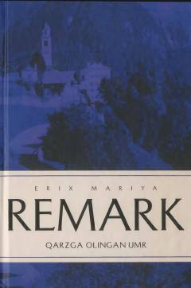

QOO'limga mahkumligini bila turib sevish va hayotdan zavqlanish haqidagi ta'sirli roman.
Mazkur asarda avtomobil poygachisi Klerfe va og'ir xastalikka yo'liqqan Lilianning murakkab sevgi munosabatlari va hayotiy iztiroblari tasvirlangan. Yozuvchi inson umrining qadr-qimmati, o'lim va muhabbat mavzularini o'tkir fojiaviy ruhda ochib beradi.